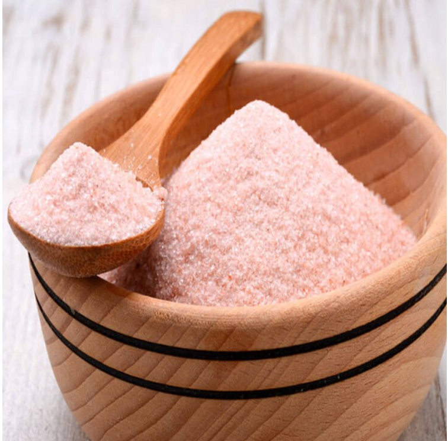

Located inside The District mall. Lafayette family owned & operated. Our donuts are handcrafted fresh daily from scratch using only the finest all-natural ingredients: flour, whole milk, cage-free eggs, cane sugar, pure vanilla, pink Himalayan salt, and other spices. We even make our own aluminum-free baking powder. And not just our donuts; we also make our glazes and icings from scratch using premium natural ingredients like whole vanilla beans and pure maple syrup! No artificial flavors. No artificial colors. No preservatives. No HFCS. No GMOs. Even our rainbow sprinkles are natural with plant-based colors. Come watch our donuts being made in our open kitchen. We only sell donuts that are freshly-made. No leftover day-old donuts. All our donuts are made fresh daily from scratch using the finest all-natural ingredients. We use premium, natural ingredients because we feel our customers deserve the highest quality and best tasting donuts made only with ingredients nature intended for us to eat.